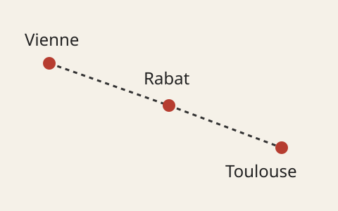

Prochain départ
Un peu de mon parcours, quelques projets et beaucoup de choses à apprendre.
Salut, moi c’est Salim.
Je suis étudiant en deuxième année de licence, parcours informatique, à l’Université Toulouse – Jean Jaurès. Je suis Marocain, né à Vienne en Autriche, et j’ai grandi à Rabat.
Sur ce site, je présente mes études, deux programmes que j’ai réalisés et mes centres d’intérêt. En dehors de l’informatique, j’aime surtout le football et la Formule 1.

Pourquoi « Prochain départ » ?
J’ai vécu dans plusieurs pays et je continue aujourd’hui mes études à Toulouse. Ce titre représente les étapes de mon parcours et celles qui viendront ensuite. C’est aussi un petit clin d’œil à la Formule 1.
Pour commencer la visite
- Mes projets : un jeu du pendu et un solveur de sudoku.
- Mes passions : le Barça, Messi et Hamilton.
- Toulouse en mouvement : une future fonctionnalité autour de VélôToulouse.